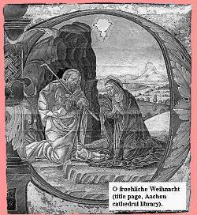
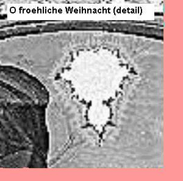
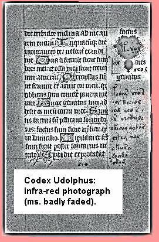

THE MANDELBROT MONKby Ray Girvan Until recently, Udo of Aachen occupied a sideline in the history books as a minor poet, copyist and theological essayist. Even his birth and death dates of this mediaeval Benedictine monk are unknown, though he probably lived from around 1200-1270 AD. [*1] A new study of his work, however, has led to his recognition as an outstandingly original and talented mathematician. While Udo himself is little-known, one of his works is far more familiar. This 13th century German monk was the author of a poem called Fortuna Imperatrix Mundi (Luck, Empress of the World) in the collection of mediaeval underground verses now known as the Carmina Burana. [*2] Orchestrated by composer Carl Orff in 1937, Udo's poem is now widespread as the choral work, O Fortuna, which has been used by the media many times, from incidental music to the film Excalibur to the backing for after-shave lotion advertisements. The first clue to Udo's undiscovered skills was found by mathematician Bob Schipke, a retired professor of combinatorics. On a holiday visit to Aachen cathedral, the burial place of Charlemagne, Schipke saw something that amazed him. In a tiny nativity scene illuminating the manuscript of a 13th century carol, O froehliche Weihnacht, he noticed that the Star of Bethlehem looked odd. On examining it in detail, he saw that the gilded image seemed to be a representation of the Mandelbrot set, one of the icons of the computer age. [*3]  Discovered in 1976 by IBM researcher Benoit Mandelbrot, the Mandelbrot set is the most famous fractal (a mathematical object with the property of infinite detail). Only the advent of fast computers made feasible the repeated calculations involved - or so it was thought. [*4] "I was stunned," Schipke says. "It was like finding a picture of Bill Gates in the Dead Sea Scrolls. The colophon [the title page] named the copyist as Udo of Aachen, and I just had to find out more about this guy." Schipke visited Bavaria, where the poems, Cantiones profanae (now the Carmina Burana), were discovered in 1837. Written by wandering scholars and monks in the 13th century, they were collected as an anthology in the Benedictine monastery at Beuron, near Munich, and Schipke began his search there. With the help of historian Dr Antje Eberhardt at the University of Munich, Schipke gained access to ecclesiastical archives, where he found a document called the Codex Udolphus. Written in illuminated Latin, with informal marginalia in Greek, the Codex bore the signature of Udo himself. "Although it had been discovered in the 19th century, it had promptly been filed away again," Schipke says. "The local historian who found it was clearly no mathematician, and dismissed it as obscure theology. But it yielded several major surprises." In a recent paper, Schipke and Eberhardt report on Udo's discoveries. [*5] The first chapter, Astragali (Dice) was originally thought to be a discourse on the evils of gambling. It turned out to be Udo's research into what we now would call probability theory. He derived simple rules to add and multiply probabilities, and thus devised strategies for several card and dice games. The second part, Fortuna et Orbis (Luck and a Circle) describes Udo's determination of the value of pi by scattering equal sticks on a ruled surface, and counting what proportion lie across the lines. This was an anticipation of the Buffon's Needle technique, named after the 18th century mathematician normally credited with its discovery. [*6] This is a very laborious method, but Udo managed to get a respectable - but very lucky - approximation of 866/275 (3.1418...) and had enough confidence in it to dispute the value of pi=3 implied in the Bible. [*7] (I say 'lucky' because Buffon's Method converges extremely badly, and it's well possible that Udo achieved this good result by choosing his stopping point judiciously - perhaps influenced by the 3.1418 quoted by his contemporary, Leonard of Pisa, otherwise known as Fibonacci). Schipke continues: "What was interesting at this point was that we looked back at the words of O Fortuna, and suddenly they fell into place. Verse two - Luck / like the moon / changeable in state / We are cast down / like straws upon a ploughed field / Our fates measuring / the eternal circle - is very clearly an allusion to the Buffon's Needle method." [*8] More was to come. In the final and longest chapter, Salus (Salvation), Schipke uncovered the most radical work. Udo had, it seemed, investigated the Mandelbrot set, seven centuries before Mandelbrot.  Initially, Udo's aim was to devise a method for determining who would reach heaven. He assumed each person's soul was composed of independent parts he called "profanus" (profane) and "animi" (spiritual), and represented these parts by a pair of numbers. Then he devised rules for drawing and manipulating these number pairs. In effect, he devised the rules for complex arithmetic, the spiritual and profane parts corresponding to the real and imaginary numbers of modern mathematics. In Salus, Udo describes how he used these numbers: "Each person's soul undergoes trials through each of the threescore years and ten of allotted life, [encompassing?] its own nature and diminished or elevated in stature by others [it] encounters, wavering between good and evil until [it is] either cast into outer darkness or drawn forever to God." When Schipke saw the translation, at once he saw it for what it was: an allegorical description of the iterative process for calculating the Mandelbrot. In mathematical terms, Udo's system was to start with a complex number z, then iterate it up to 70 times by the rule z -> z*z + c, until z either diverged or was caught in an orbit. [*4] Below the description was drawn the first crude plot of the Mandelbrot, which Udo called the "Divinitas" ("Godhead"). He set it out in a 120x120 frame he termed a "columbarium" (i.e. a dovecote, which has a similar grid of niches) and records that it took him nine years to calculate, even with the newly imported technique of ‘algorism', calculation with Arabic numerals rather than abacus. "It tends to be taken for granted," Schipke says, "That the Mandelbrot is too calculation-intensive to be done without computers. What we have to remember is the sheer devotion of the monastic life. This was a labour of faith, and Udo was prepared to work for years. Some slowly-converging pixels must have taken weeks." Why did the work of this gifted mathematician go unnoticed for so long? Schipke blames, in part, specialisation. "When the Codex was unearthed in 1879, only a non-mathematician got to see it, and he didn't know what he was looking at. It's a common enough story. Take Hildegard of Bingen, whose accounts of her visions were taken as pure mysticism, but neurologist Oliver Sacks instantly recognised them as accurate descriptions of migraine symptoms. Likewise, literary critics dismissed Edgar Allan Poe's final work, Eureka, as alcoholic ravings. But now scientists are finding valid insights in it, such as Poe's correct solution of the Olbers paradox in astronomy, or his coining of the classic Einsteinian phrase, 'Space and duration are one'." [*9, *10] "But there were also contemporary reasons why Udo's knowledge didn't make it into the mainstream. His basic belief - that salvation and damnation could be determined in advance - was heretical, and his use of Arabic numerals was thought a bit of a black art. And there was the disagreement with Thelonius."  Despite the borderline nature of his work, Udo impressed his abbot at the monastery of Sankt Umbertus near Aachen. Life for a 13th century monk wasn't necessarily austere: the scurrilous Cantiones profanae poems record the delights of sex, eating, drinking and gambling. In a footnote to Astragali, Udo writes: "My enumeration of the ways [of dice] helped my lord abbot to win thirty-two florins and a fine new cloak from the Burgermeister at Irrendorf, and he has promised me a helper for my work". But Udo and his helper, Thelonius, ran into instant disagreement. Udo had always interpreted the Mandelbrot as signifying God. Thelonius took the opposite view: that it represented the Devil. Numbers that escaped to infinity, he argued, were souls flying free to heaven, and those caught in an orbit had fallen into the pit of Hell. Like many theological collaborations, they had a schism on their hands. Udo noted that their differences brought all work to a halt, and finally the two were reprimanded by the abbot for coming to blows in the refectory. "Sadly I write," says Udo on the last page of the Codex Udolphus, "that on pain of excommunication I must lay down my dice and my numbers. I have seen into a realm of heavenly complexity, and my heart is heavy that the door is now closed." Bob Schipke comments: "It's a pity that personal differences ended research that could have moved mathematics forward by centuries. But fortunately, Udo couldn't leave the subject alone. By dropping clues into the Cantiones profanae and the manuscripts he illuminated later in his life, he ensured that we were able to recover his work and give him the recognition that he deserves." |
|
References: [1] "The Benedictine Order: a Historical
Miscellany", edited by Rose M Wolanski, Springer-Verlag, 1965. The Mandelbrot Monk has been cited
at: |
|
© Ray Girvan (ray@raygirvan.co.uk), April 1st 1999.
|